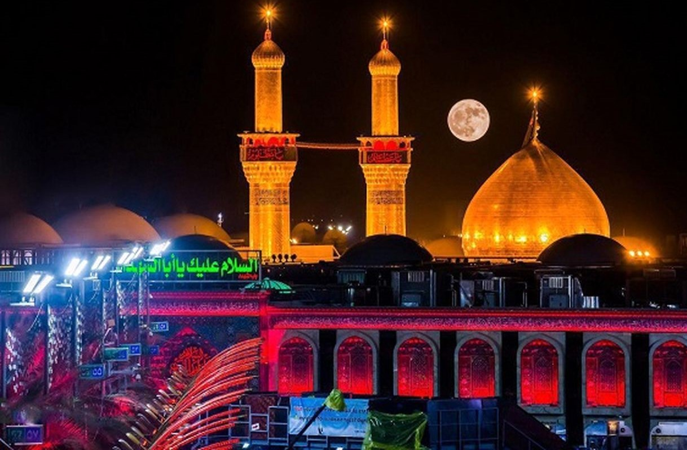
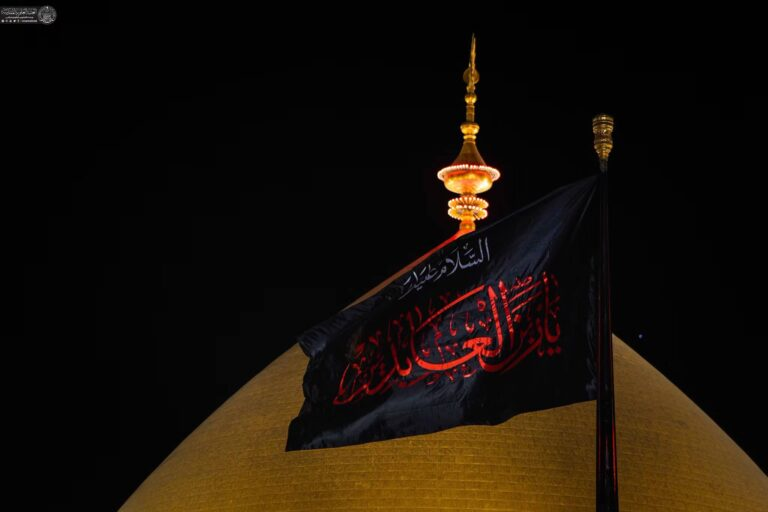

Muharram, 61 AH October, 680 CE
The road to Karbala
A small caravan, a broken promise of safe passage, and ten days on a dry plain beside the Euphrates. Historians of every school agree on the outline; only its meaning divides them.

This account draws on the outline accepted across Sunni and Shia historiography alike writers such as al-Tabari and later Shia compilers such as Shaykh Abbas Qummi differ mainly in emphasis and detail, not in the basic sequence of events. Dates follow the Islamic lunar calendar (AH) alongside their Gregorian equivalents.
661 CE
A fragile peace
Imam Ali, the Prophet's cousin and son-in-law and the first Shia Imam, is killed in Kufa. His elder son Hasan briefly succeeds him, then agrees a peace treaty with the governor of Syria, Mu'awiya ibn Abi Sufyan, ceding the caliphate on the condition that succession would not become hereditary.
April 680 CE
Mu'awiya dies, Yazid demands allegiance
Mu'awiya's death brings his son Yazid I to power in practice breaking the earlier treaty's spirit. Yazid immediately seeks a public oath of allegiance (bay'ah) from the men Medina still looked to, above all Hussain ibn Ali, the Prophet's surviving grandson and the third Shia Imam.
May 680 CE
Hussain refuses, and leaves Medina
Hussain regards Yazid's rule as a betrayal of the Prophet's own values public wrongdoing paired with a hereditary claim neither elected nor agreed. He declines to pledge allegiance and withdraws with his household to Mecca, out of reach of the governor sent to press him.
July 680 CE
Letters from Kufa
Kufa, a garrison city with deep loyalty to Imam Ali's memory, sends Hussain letter after letter promising support if he will lead them. Hussain sends his cousin Muslim ibn Aqeel ahead to test the ground. Muslim finds thousands willing to pledge themselves until Kufa's new governor, Ubaydullah ibn Ziyad, moves against him. Abandoned by the same crowds that had sworn loyalty, Muslim is captured and killed.
9 September 680 CE
The caravan sets out
Before news of Muslim's death can reach him, Hussain leaves Mecca for Kufa with his family and a small body of companions accounts put the whole travelling party, including women and children, at little more than a hundred people. He learns of the betrayal only partway along the road, and chooses to continue.
2 October 680 CE
Intercepted at Karbala
An Umayyad cavalry column under Hurr ibn Yazid al-Tamimi meets the caravan and steers it away from Kufa, onto open ground beside the Euphrates known as Karbala. Ibn Ziyad's orders arrive: Hussain is to camp there, under guard, until he submits.
7 October 680 CE
The river is closed
Ibn Ziyad orders the river blockaded. For the last three days, Hussain's camp men, women, and small children among them goes without water while a much larger force, eventually numbering in the thousands under Umar ibn Sa'd, gathers around them.
9 October 680 CE — Tasu'a
The last night
Given one final night, Hussain reportedly releases his companions from any obligation to stay, telling them the enemy wants him alone and they are free to leave under cover of darkness. Tradition holds that not one of them went.
10 October 680 CE Ashura
The battle
Fighting opens at dawn. Hussain's companions go out to meet the larger army one and a few at a time and are killed through the morning and afternoon among them his half-brother Abbas ibn Ali, who tries to bring water back to the camp's children and is cut down near the riverbank; his nephew Qasim; and his eldest son Ali Akbar. By late in the day Hussain stands almost alone, his infant son Ali Asghar killed in his arms by an arrow meant to end the siege by any means. Hussain is finally killed and beheaded; his surviving relatives and the women of the camp are taken captive. Hurr, the officer who first intercepted the caravan, changes sides that morning and dies fighting for Hussain remembered in Shia tradition as the model of a repented conscience.
October 680 CE onward
Captivity, and the walk to Damascus
The camp is burned and the surviving family — led in practice by Hussain's sister Zaynab bint Ali and his surviving son, the ill Ali ibn Husayn, later known as Zayn al-Abidin — is marched first to Kufa and then on to Yazid's court in Damascus. Zaynab's speeches before both governors are remembered in Shia tradition as turning a military rout into a moral indictment of the Umayyad court. The captives are eventually released and allowed to return; local people at Karbala bury Hussain and his companions at the site where they fell, which becomes his shrine.

Names worth knowing
A few of those who were there
Abbas ibn Ali
Hussain's half-brother and standard-bearer, remembered above all for trying and failing to bring water to the camp's children while surrounded. The five-fingered Panja standard carried in Muharram processions today is popularly tied to his memory.
Zaynab bint Ali
Hussain's sister, who survived the battle and led the captive household through Kufa and Damascus. Her courage and public speech in Yazid's court are central to how Shia tradition remembers the aftermath.
Hurr ibn Yazid al-Tamimi
The officer who first blocked Hussain's path, and who chose, on the morning of Ashura, to cross to Hussain's side knowing it meant his own death. Held up as a figure of last-minute repentance.
This is a history, but it did not stay in the past for the people who tell it. What the events of Ashura came to mean and how that meaning is lived out every Muharram is the subject of the next page.